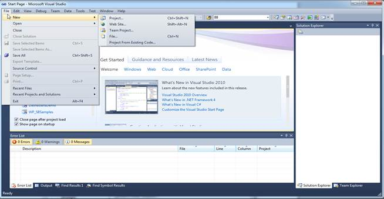
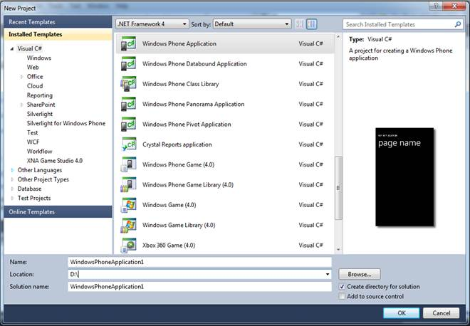

To create a windows phone application:
1. Open Microsoft Visual Studio. Go to File menu and click New Project.

Figure 9 : Add new project
2. In the New Project dialog, select Windows Phone Application template, name the project and click OK.

Figure 10 : New Phone Application
A new Windows Phone Application is created.